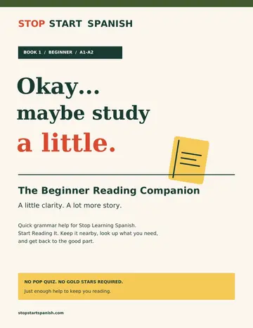

Your way into reading Spanish. The Beginner reader brings the story-led approach to A1–A2 learners, giving you a place to build your foundation and your reading habit.
Your starting point: You’re learning the basics or returning after a long break.
Put the Spanish you already know into motion. The Intermediate reader connects words and patterns through stories, helping you practice following meaning beyond individual sentences.
Your starting point: You know the basics and want to read with more confidence.
Give your Spanish more room to grow. The Advanced reader takes the series to C1–C2, inviting confident readers to explore meaning, expression, and the finer shades of the language.
Your starting point: You’re comfortable reading Spanish and ready for a deeper challenge.
Start with the level that feels comfortably challenging. You don’t have to begin with Book 1.
WHY COMPREHENSIBLE INPUT WORKS
Give your vocabulary something to do.
A word on a flashcard is waiting for a job. Put it in a story, and suddenly it has people to meet, places to go, and something at stake.
Stop Start Spanish uses comprehensible input through graded Spanish stories: language you can mostly understand, with enough new vocabulary and grammar to keep you discovering.
Follow the story. Notice the Spanish.
01
Choose your level.
Look for a stretch you can enjoy. You should be able to follow the thread without looking up every word.
02
Read for what happens.
Let the people, setting, and situation help you make sense of unfamiliar language. Keep the story moving.
03
Notice. Revisit. Repeat.
Return to a passage, spot a useful phrase, or read it aloud. Make a little Spanish part of your day.
FREE REFERENCE PACKS
Okay… maybe study a little.
Each book has a quick-reference companion for the moments when you want a little clarity—not a lot more studying. Choose the pack that matches your book, keep it nearby, and get back to the story.
No pop quiz. No gold stars. Just enough help to keep you reading.

BOOK 1 / BEGINNERA1–A2
The Beginner Reading Companion
A friendly field guide to the essentials: articles, adjective agreement, ser and estar, the present tense, and more.